Doce postales
Argentina de norte a sur
Desde las Cataratas del Iguazú hasta el canal Beagle: ciudades, quebradas, hielos y bosques a lo largo de más de 30 grados de latitud.
-
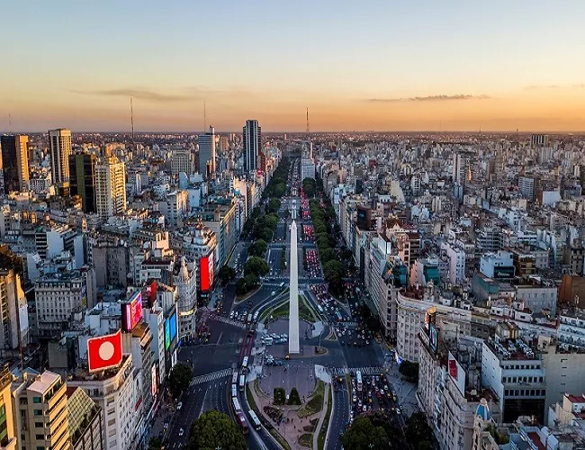
Ciudad de Buenos AiresEl Obelisco y la 9 de Julio al atardecer -
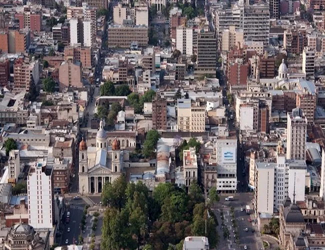
TucumánSan Miguel de Tucumán desde el aire -
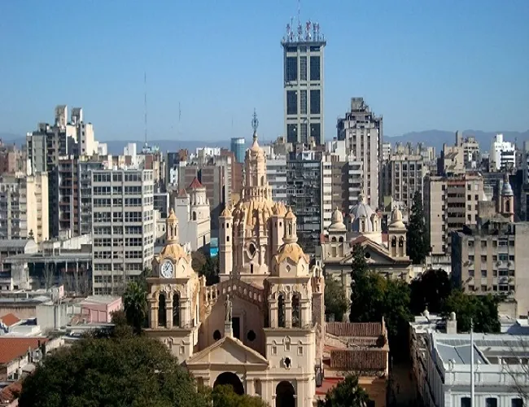
CórdobaLa Catedral entre los edificios del centro -
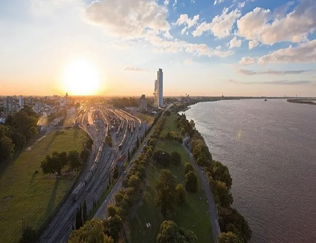
RosarioAtardecer sobre el río Paraná -
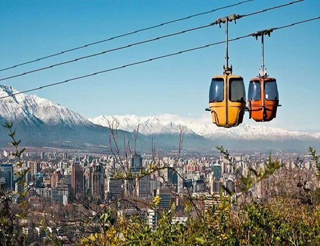
SaltaEl teleférico y la cordillera de fondo -
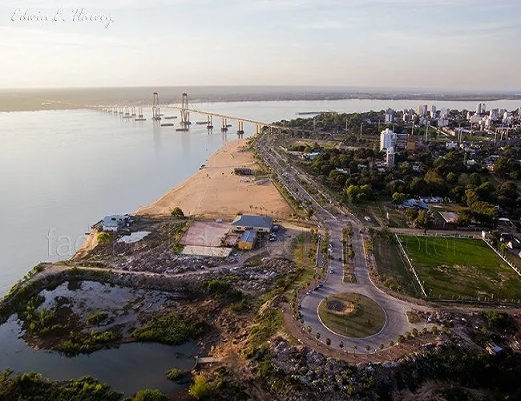
CorrientesEl puente General Belgrano sobre el Paraná -
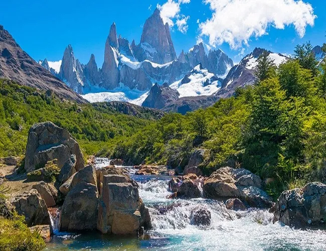
Santa CruzEl cerro Chaltén y su río de deshielo -
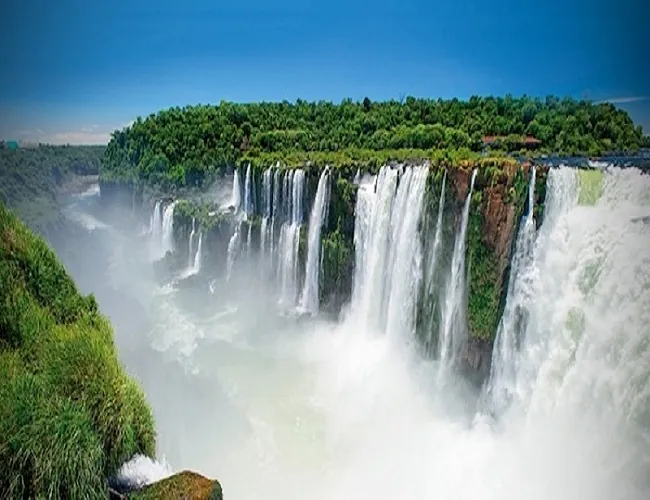
MisionesLas Cataratas del Iguazú -
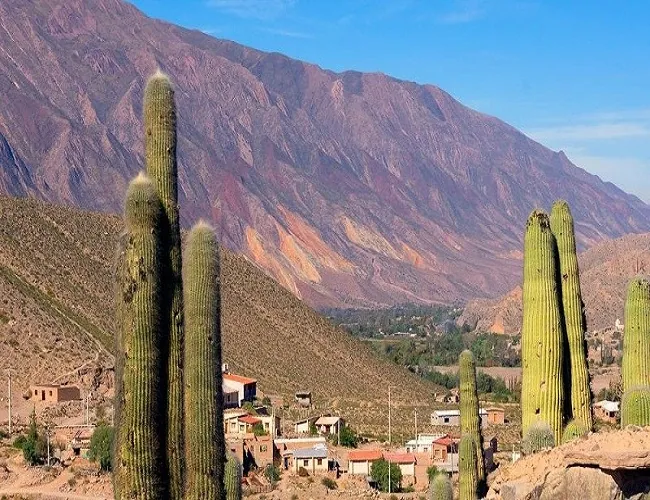
JujuyCardones en la Quebrada de Humahuaca -
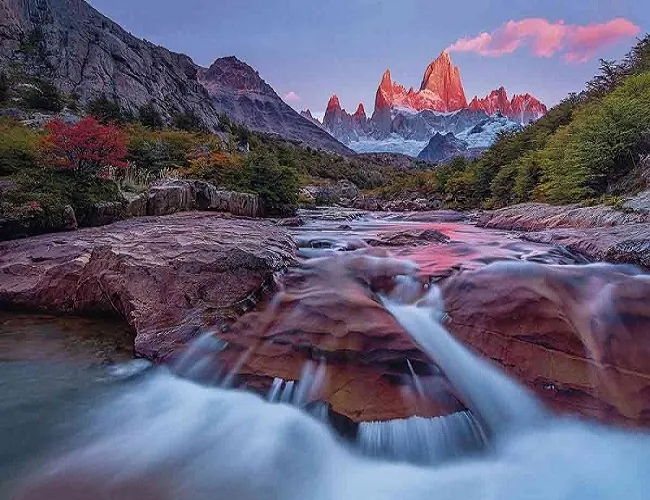
Santa CruzAmanecer sobre el Fitz Roy -
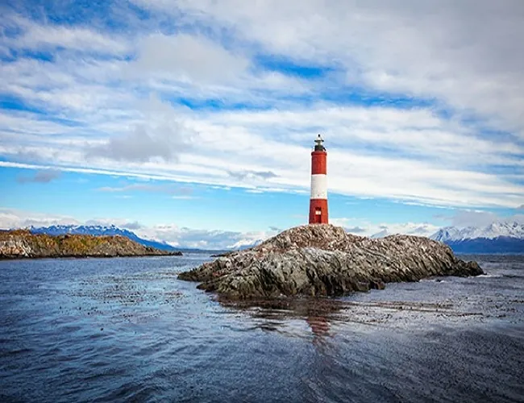
UshuaiaEl faro Les Éclaireurs en el canal Beagle -
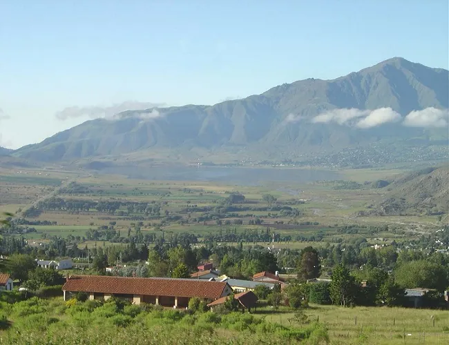
PatagoniaUn valle con estancias y montañas